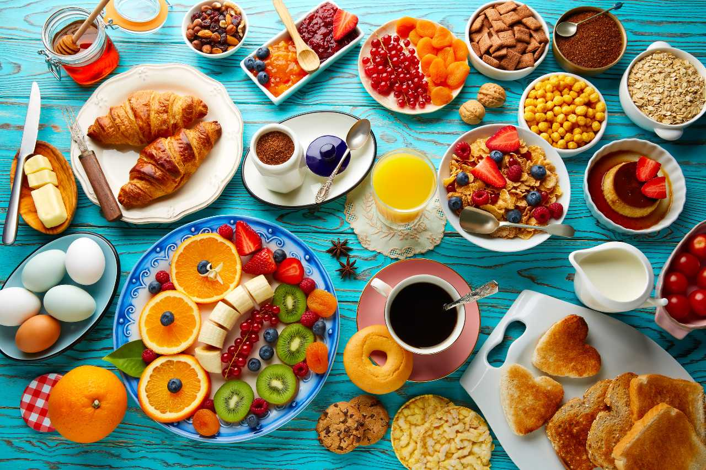
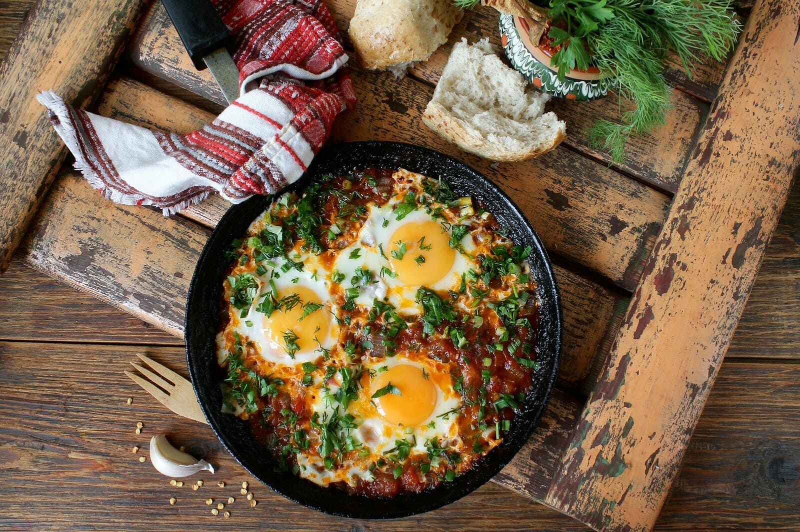
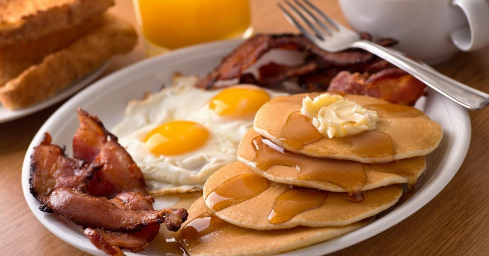

Le colazioni del mondo
Quali sono le più famose?
La colazione italiana
Essenzialmente dolce, comprende il latte e i suoi derivati, i prodotti da forno. E ancora, marmellata, la frutta fresca o secca e per finire una buona bevanda come il caffè oppure orzo o tè.
La colazione israeliana
Ricca di alimenti come pesce in salamoia, uova, insalata, formaggio. Un’altra pietanza famosa a colazione è il shakshuka composto da un paio di uova in camicia cotte in una salsa di pomodoro e peperoni piccante.

La colazione inglese
La colazione inglese è caratterizzata da un’importante quota proteica, quali uova, formaggi, bacon, fette di pomodoro,salsiccia, funghi, fagioli. Il tutto accompagnato da una tazza di tè.
La colazione americana
Conosciuta praticamente in tutto il mondo per essere un pasto particolarmente ricco, . comprende di tutto, dalle uova alla carne, passando per caffè americano, muffin, french toast, pancake e waffle.
La colazione francese
Per colazione, i Francesi prendono il caffé, té, cioccolata calda o un succo di frutta. Lo accompagnano generalmente con pane e burro, croissant o brioche alla marmellata do ogni genere.
La colazione giapponese
Solitamente salata e prevede: riso al vapore in bianco, pesce alla piastra, natto (fagioli di soia fermentati) con sopra un uovo crudo, zuppa calda di miso e tsukemono, ovvero i sottaceti.